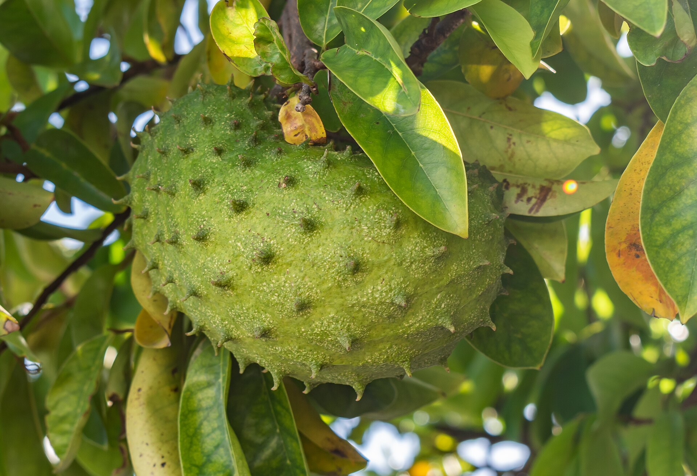

Árvores e Frutíferas
Graviola
Annona muricata
A graviola é o fruto da gravioleira, uma árvore tropical da mesma família da pinha e da cherimoia. O fruto é grande, verde e recoberto por saliências macias que lembram espinhos. Sua polpa branca é aromática e costuma ser utilizada em sucos, sorvetes e outras preparações.
- Espécie
- Gravioleira
- Ambiente
- Clima tropical
- Destaque
- Fruto verde de polpa branca